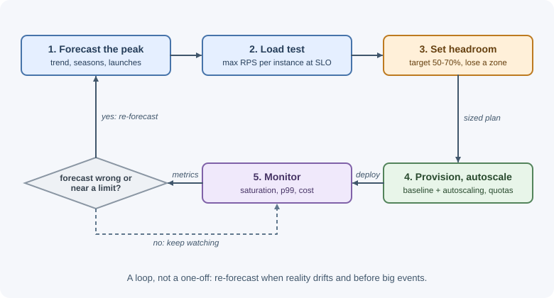
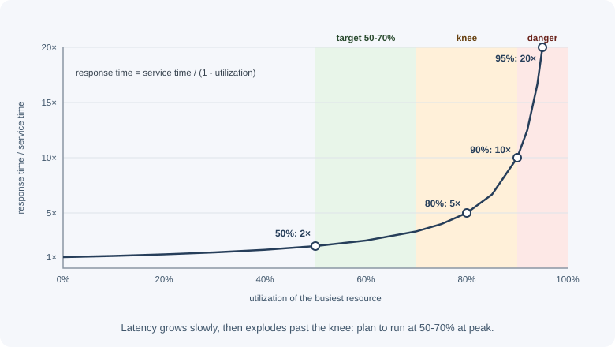

Capacity Planning¶
Capacity planning answers a simple question: will we have enough resources for the load we expect, with room to spare, at a sensible cost? It turns traffic forecasts and load-test results into numbers of servers, database size, storage, bandwidth, and budget, before users discover the limits for you.
Why it matters¶
- Running out of capacity looks like an outage. Latency climbs, requests time out, queues back up, and errors cascade, usually at the busiest and most valuable moment (a launch, a sale, enrollment day).
- Some capacity takes time to add. Autoscaling reacts in minutes, but a bigger database, more storage, a higher provider quota, or a new region can take days or weeks.
- Over-provisioning wastes money. Servers idling at 5% utilization are a real cost, often one of the largest in a cloud bill.
- Failures need spare capacity. If losing one availability zone leaves too little capacity for the remaining load, redundancy does not help.
Real-world usage¶
- Google's Auxon. Google SRE built Auxon to automate capacity planning for services running in Google production. Instead of the traditional cycle of forecasting demand and hand-building allocation plans, service owners encode their requirements and dependencies (their intent), and the tool generates a new allocation plan whenever demand, supply, or requirements change (Google SRE book).
- Shopify before Black Friday Cyber Monday. With over a million merchants relying on Shopify for BFCM, Shopify runs regular load tests (can the service withstand a known level of traffic?) and stress tests ahead of sales events, and anyone can start a large load test from Slack (Shopify Engineering).
- Netflix's predictive autoscaling. Netflix built Scryer, a predictive autoscaling engine, because reactive autoscaling was not enough for its use cases: instance startup times ranged from 10 to 45 minutes, leaving existing servers exposed during rapid spikes, and outages could be followed by retry storms (Netflix TechBlog).
- AWS plans for zone failure. AWS runs many services across three or more Availability Zones and overprovisions by 50 percent with three zones, so the remaining zones can carry the full load if one is impaired, without launching new capacity during the event (AWS Builders' Library).
- Predictive scaling as a product. Amazon EC2 Auto Scaling offers predictive scaling, which analyzes historical load to detect daily and weekly patterns and increases capacity ahead of the forecast load (AWS documentation).
Popular tools and providers: load testing with k6, Gatling, Apache JMeter, and Locust; scaling with cloud autoscaling groups (including scheduled and predictive policies), the Kubernetes Horizontal Pod Autoscaler, KEDA, and Karpenter; cost visibility with cloud cost explorers, budgets, and tools such as Kubecost.
How it works¶
The capacity planning loop¶
1. Measure current demand and resource usage
2. Forecast future demand (growth, seasonality, events)
3. Measure capacity per unit (load test: what can one instance handle?)
4. Calculate required resources + headroom + failure margin
5. Provision (or configure autoscaling limits) and check cost
6. Monitor actual usage against the plan, and repeat regularly

Forecasting load¶
Start from data, not guesses:
- Baseline: current requests per second, active users, data growth per day, and resource utilization, per service and per endpoint.
- Daily and weekly patterns: most services have a peak several times higher than their average. The peak-to-average ratio is often 2x to 5x; measure yours.
- Growth trend: organic growth over months, from historical metrics.
- Seasonality: holidays, end of month, back to school, tax season.
- Planned events: launches, marketing campaigns, a big customer onboarding, a TV mention. Ask the business teams; they know before the metrics do.
- Product changes: a new feature that polls every 10 seconds can multiply traffic overnight.
Plan for the peak, not the average, and add a margin for forecast error.
Units of capacity¶
Every resource has a limit, and the first one you hit is the bottleneck:
| Resource | Example limits |
|---|---|
| Compute | CPU per instance, requests/s per instance, event loop saturation |
| Memory | Heap size, cache size, per-connection buffers |
| Database | Queries/s, connections (max_connections), IOPS, storage, replication lag, lock contention |
| Storage | Disk size and growth, IOPS and throughput limits |
| Network | Bandwidth per instance, load balancer limits, egress cost |
| Queues | Consumer throughput vs arrival rate, backlog size |
| Third parties | API rate limits and quotas (email, SMS, payments), account limits on the cloud provider |
Headroom and target utilization¶
Never plan to run resources at 100%. Plan a target utilization at peak that leaves headroom for:
- Forecast error and sudden spikes.
- Time for autoscaling to react.
- Losing an instance or a whole availability zone.
- Background work (deployments, backups, cache warming).
A common starting point is to keep CPU at peak around 50% to 70% of the measured maximum per instance, then adjust from experience.
Surviving a zone failure: with capacity spread evenly over Z zones, losing one leaves (Z - 1)/Z of it. To carry the full peak load after losing one of 3 zones, the remaining 2 zones must handle 100% of the traffic, so during normal operation each zone runs at most about two-thirds of what it could safely handle.
Why latency explodes near full utilization¶
When requests arrive at random and a resource is busy, new requests wait in a queue. A classic queueing result (for a single server with random arrivals and service times, the M/M/1 model) shows how average response time grows with utilization ρ:
response time = service time / (1 - ρ)

| Utilization (ρ) | Response time as a multiple of service time |
|---|---|
| 50% | 2x |
| 70% | ~3.3x |
| 80% | 5x |
| 90% | 10x |
| 95% | 20x |
| 99% | 100x |
Real systems are more complex, but the shape holds: latency rises slowly at first and then sharply as utilization approaches 100%. The point where the curve turns upward is the knee. Going from 60% to 90% utilization does not cost 50% more latency; it can cost several times more, and the tail gets worse faster than the average. That is why headroom is not waste.
Load testing to find the limits¶
Capacity per instance must be measured, not guessed:
- Ramp test: increase load step by step and record throughput, p50/p95/p99 latency, error rate, and resource usage at each step. The maximum sustainable throughput is where latency stays within the SLO.
- Find the bottleneck: note which resource saturates first (CPU, database connections, memory, a downstream service). Fixing it raises the ceiling until the next bottleneck appears.
- Stress test: push past the limit to see how the system fails. Good
systems shed load with
503s; bad ones collapse completely. - Soak test: hold expected load for hours to find memory leaks, connection leaks, and slow degradation.
- Spike test: jump suddenly from low to high load to see whether autoscaling and caches cope.
Use production-like data volumes, a realistic mix of endpoints, and an environment that matches production. See performance testing and performance and latency.
Autoscaling vs provisioned capacity¶
| Autoscaling | Provisioned (fixed) capacity | |
|---|---|---|
| How | Add and remove instances based on metrics or schedules | Run a planned, fixed number of resources |
| Strengths | Follows demand; saves money off-peak | Predictable; instant capacity; no warm-up |
| Weaknesses | Reacts in minutes; new instances need warm-up (startup, caches, JIT); can fail if the provider is short of capacity | Wasteful when demand is low |
| Fits | Stateless app tiers, workers on queues | Databases, stateful systems, a known baseline |
Practical combinations:
- Provision a baseline (the minimum) for normal traffic, and autoscale above it.
- Scheduled scaling before known peaks (9 a.m. on weekdays, a sale launch) so capacity is already there.
- Set maximums that protect downstream systems: 200 app instances can exhaust a database's connections.
- Remember that databases do not scale out instantly; plan their capacity ahead. See database scaling and stateless services and autoscaling.
Cost awareness¶
Capacity is a cost decision as well as a technical one:
- Track cost per unit of business value: per 1,000 requests, per active user, per order.
- Right-size: instances consistently below 20% CPU can usually be smaller.
- Commit for the baseline (reserved instances, savings plans, committed use discounts) and pay on demand for the variable part.
- Use cheaper capacity for interruptible work: spot or preemptible instances for batch jobs and queue workers that can be retried.
- Watch data transfer (egress): serving large responses across the internet or between regions can cost more than the servers.
- Tier storage: move old data to cheaper storage classes; set retention and lifecycle rules for logs and backups.
- Shut down idle environments (development and test outside working hours).
- Balance against reliability: removing the spare zone's capacity saves money until the day a zone fails.
Capacity for databases, storage, and bandwidth¶
Databases:
- Queries per second for reads and writes, separately; writes usually limit the primary, and reads can move to replicas or caches.
- Connections: instances x pool size per instance (plus workers and cron jobs) must stay below the database's connection limit. A connection pooler (such as PgBouncer) helps.
- Working set in memory: performance drops sharply when frequently used data and indexes no longer fit in RAM.
- Storage growth and IOPS, replication lag at peak, and time to back up and restore at the projected size.
Storage:
raw growth per day x retention period x replication factor
+ indexes and overhead + backups and snapshots
Bandwidth:
average response size x requests per second x 8 = bits per second
Revisiting the plan¶
Capacity planning is continuous:
- Review quarterly, and before every major launch.
- Alert on saturation signals (CPU, memory, connections, disk, queue age) well before 100%.
- Compare forecasts with reality and improve the model.
- Record limits and assumptions so the next review starts from facts.
When to use and when not to use¶
Invest in formal capacity planning when:
- Traffic has predictable peaks or known events (sales, enrollment, launches).
- Some resources are slow to scale: databases, storage, provider quotas, reserved hardware.
- Downtime under load is costly, or an SLO must hold during peaks.
- Cost is significant enough that over-provisioning matters.
Keep it lightweight when:
- The product is early and traffic is small; a managed or serverless platform with sensible limits and alerts is enough.
- Everything in the path scales automatically and quickly, and cost is minor.
| Approach | How it works | Use when | Weaknesses |
|---|---|---|---|
| Provisioned capacity | Fixed resources sized for peak plus headroom | Databases, stateful systems, steady load | Waste at low traffic |
| Reactive autoscaling | Add instances when metrics cross thresholds | Stateless tiers with gradual changes | Lags behind sudden spikes; warm-up time |
| Scheduled scaling | Scale at known times | Daily or weekly patterns, planned events | Does not handle surprises |
| Predictive scaling | Forecast from history and scale ahead | Regular patterns with long instance startup | Needs history; can mispredict unusual days |
| Serverless / fully managed | Provider scales per request | Spiky or low traffic, small teams | Concurrency limits, cold starts, cost at very high steady load |
Most production systems combine them: provisioned databases, a baseline plus reactive and scheduled scaling for the app tier, and serverless for spiky side workloads.
Practical examples¶
A worked example¶
A service has 2 million daily active users, each making about 30 API requests per day.
1. Request rate
Daily requests = 2,000,000 x 30 = 60,000,000
Average rate = 60,000,000 / 86,400 s ~ 694 requests/s
Peak (3x avg) ~ 2,083 requests/s
Plan for growth (+40% next 12 months) -> design peak ~ 3,000 requests/s
2. App instances
A load test shows one instance sustains 400 requests/s while p99 stays under the 300 ms SLO.
Normal operation at <= 60% of max (240 req/s per instance):
3,000 / 240 = 12.5 -> 13 instances
Zone failure: 3 zones, survive losing 1, allowing up to 85% of max (340 req/s)
on the remaining instances during the incident:
3,000 / 340 = 8.8 -> 9 instances needed in the 2 surviving zones
-> 5 per zone (10 in 2 zones) -> 15 instances in total
Choose 15 (5 per zone). Normal utilization: 3,000 / 15 = 200 req/s = 50% of max.
3. Database
Each request makes ~2 queries -> 6,000 queries/s at peak
80% reads, 20% writes -> 4,800 reads/s, 1,200 writes/s
Cache absorbs 75% of reads -> 1,200 reads/s reach the database
Primary: 1,200 writes/s; reads spread over 2 replicas (~600/s each)
Connections: 15 instances x pool of 10 = 150, + 20 for workers = 170
(keep well below the database's connection limit)
4. Storage
New data per user per day ~ 5 KB
Raw growth = 2,000,000 x 5 KB = 10 GB/day -> ~3.65 TB/year
+ indexes and overhead (~30%) -> ~4.7 TB/year
x 3 copies (primary + 2 replicas) -> ~14 TB of disk per year
+ backups (separately, with retention)
5. Bandwidth
Average response 15 KB
Peak egress = 3,000 x 15 KB = 45 MB/s ~ 360 Mbit/s
Monthly data = 694 req/s x 15 KB x 2,592,000 s (30 days) ~ 27 TB/month
-> compression and CDN caching matter for both speed and cost
For quick estimation techniques, see back-of-the-envelope estimation.
A small capacity calculator¶
function planInstances({ peakRps, maxRpsPerInstance, targetUtilization, zones, failureUtilization }) {
// Enough for peak at the target utilization
const normal = Math.ceil(peakRps / (maxRpsPerInstance * targetUtilization));
// Enough to carry peak with one zone lost, at a higher emergency utilization
const neededInSurvivors = Math.ceil(peakRps / (maxRpsPerInstance * failureUtilization));
const perZone = Math.ceil(neededInSurvivors / (zones - 1));
const withZoneLoss = perZone * zones;
const total = Math.max(normal, withZoneLoss);
return { total, perZone: Math.ceil(total / zones), normalUtilization: peakRps / (total * maxRpsPerInstance) };
}
console.log(planInstances({
peakRps: 3_000, maxRpsPerInstance: 400, targetUtilization: 0.6, zones: 3, failureUtilization: 0.85,
}));
// { total: 15, perZone: 5, normalUtilization: 0.5 }
Utilization vs latency¶
// Average response time multiplier for a single queue (M/M/1 approximation)
for (const rho of [0.5, 0.7, 0.8, 0.9, 0.95, 0.99]) {
console.log(`${Math.round(rho * 100)}% busy -> ${(1 / (1 - rho)).toFixed(1)}x service time`);
}
Best practices¶
- Plan for peak load plus growth plus failure, not the average.
- Measure per-instance capacity with load tests and find the first bottleneck.
- Keep headroom: target utilization well below 100% at peak.
- Spread capacity across zones so losing one still fits the load.
- Combine a provisioned baseline with autoscaling and scheduled scaling for known peaks.
- Plan slow-to-scale resources early: databases, storage, quotas, and third-party limits.
- Track cost per request or per user and right-size regularly.
- Alert on saturation before limits are reached.
- Write down assumptions and revisit the plan regularly.
In production¶
- Autoscaling cannot keep up with a spike. Detect: error rate and p99 rise for several minutes while the instance count climbs slowly behind demand. Cause: reactive scaling plus long startup and warm-up time. Fix: scheduled or predictive scaling before known peaks, a higher minimum capacity, and faster startup (smaller images, lazy initialization).
- A limit nobody planned for. Detect: sudden throttling errors from a
provider (
429from an email or SMS API, cloud API throttling errors), or "too many connections" from the database. Cause: quotas and connection limits were not part of the plan. Fix: keep an inventory of quotas and limits, request increases ahead of launches, and alert when usage reaches a set fraction of each limit. - A disk fills up. Detect: write failures with "No space left on device"; database or broker refusing writes. Cause: data or log growth faster than forecast, or retention never configured. Fix: forecast growth from metrics, alert at 70-80% usage, set retention and lifecycle rules, and enable storage autoscaling where the platform supports it.
- Healthy averages, slow users. Detect: average CPU around 40%, but p99 latency is high and one database partition, one zone, or one instance is saturated. Cause: averages across a fleet hide a hot spot. Fix: monitor per-resource saturation and peak values (per minute, not per hour), and rebalance or fix the hot resource.
- The cloud bill jumps. Detect: cost per request or per user rises month over month. Cause: over-provisioned instances, forgotten environments, cross-region or internet egress, or unbounded log storage. Fix: right-size from utilization data, tag resources by owner, set budgets and alerts, and add CDN caching or compression for egress-heavy traffic.
Important terminology¶
- Capacity: the maximum load a system can handle while meeting its objectives.
- Peak-to-average ratio: how much higher the busiest period is than the average.
- Headroom: spare capacity kept for spikes, failures, and growth.
- Target utilization: the planned busy fraction of a resource at peak.
- Knee: the point where latency starts rising sharply with load.
- Bottleneck: the resource that limits overall throughput.
- Saturation: how close a resource is to its limit.
- Right-sizing: matching resource sizes to actual needs.
- N+1 capacity: one more unit than needed, so one failure still leaves enough.
- Egress: data leaving a cloud network, usually billed.
Common mistakes and misconceptions¶
- Planning from average traffic and failing at the daily peak.
- Assuming autoscaling solves everything: it is not instant, has limits, and does not scale your database.
- Running at 90% utilization "to save money" and suffering huge latency and fragility.
- Forgetting the failure case: enough capacity in total, but not after a zone goes down.
- Ignoring connection limits: more app instances overload the database.
- Load testing with unrealistic data or traffic mixes.
- Forgetting third-party quotas, such as an email provider's daily limit.
- Planning once and never revisiting.
Revision questions¶
- Why should capacity be planned for peak load rather than average load? How do you estimate the peak?
- Explain why response time rises sharply as utilization approaches 100%.
- With three availability zones, how much of each zone's capacity can you use normally if you must survive losing one zone?
- What does a ramp load test tell you, and what is the knee of the curve?
- When is provisioned capacity better than autoscaling?
- Estimate the peak request rate for 1 million daily users making 50 requests each, with a peak-to-average ratio of 4.
Further learning¶
- Google SRE book: Handling Overload and Addressing Cascading Failures.
- AWS Well-Architected: Performance Efficiency Pillar and Reliability Pillar.
- AWS Builders' Library: Using load shedding to avoid overload.
- Related: back-of-the-envelope estimation and availability and reliability.